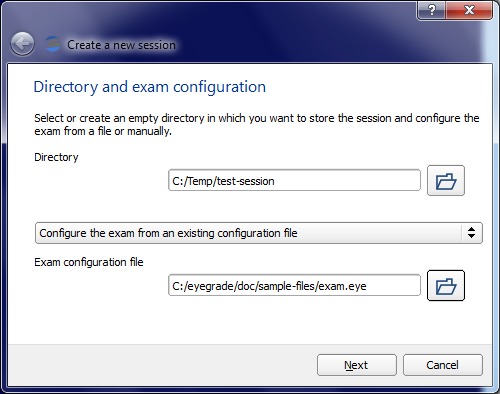
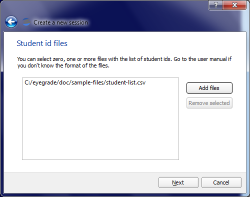
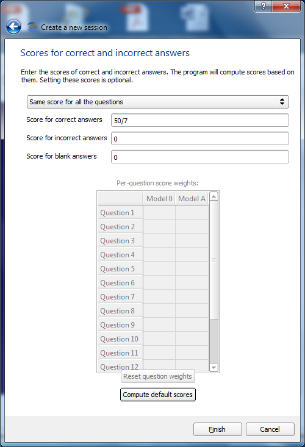
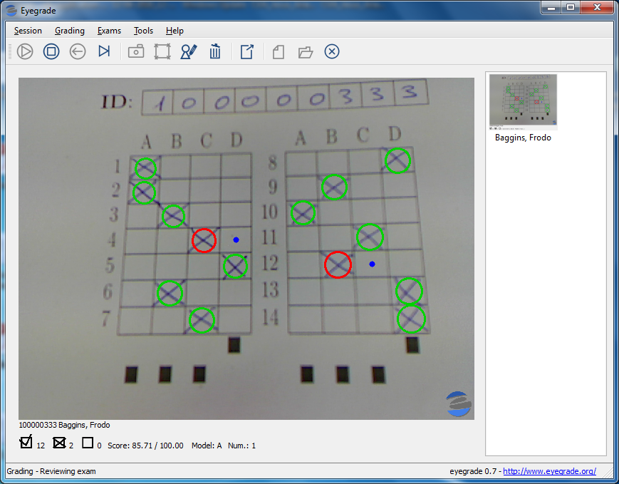

Quick start guide
This brief guide explains how to install Eyegrade and use it to grade an example exam. In order to follow this guide you'll need:
- A computer with Microsoft Windows or a not too old Linux distribution
- A printer
- A webcam
Go to the downloads page. If you are on Windows, download the latest stable release of the Eyegrade installer for Windows from there. Then run the installer. The Windows security system will probably alert you with a scary message saying that the installer was downloaded from the Internet, it isn't trusted and may be harmful. You should skip the message and proceed with the installation anyway, since being it a volunteer project, I don't have the resources to pay for a trusted certificate to sign the code, which is a prerequisite to avoid the alert. Once the program is installed, you'll find a new folder in your start menu, and a program named eyegrade inside it.
If you are on Linux, download the Linux binary files, which should run on any reasonably recent Linux distribution. Copy them to a directory in your PATH (for example, /usr/local/bin is usually fine). The binary file eyegrade contains the main program.
Before running Eyegrade, download the following example files (a copy of these files is also included within the Examples entry in Eyegrade's start menu):
- An example exam in PDF format: exam-A.pdf
- The exam configuration file, which tells Eyegrade about the exam (number of questions, correct answer to each question, etc.): exam.eye
- The student list, which helps Eyegrade detect the student id (it's easier to correctly detect the id when the student list is closed): student-list.csv
Print a copy of the exam in PDF format and mark your answers to the questions with a cross. Write down also the student id, by using one of those from the student list (for example, the id of Frodo Baggins is 100000333).
Let's now grade the exam. Make sure the webcam is plugged in the computer and run Eyegrade from the start menu. You'll see Eyegrade's main window:
Check the webcam in the Tools menu by clicking on Select camera. You should see the video captured by your webcam. If your laptop has more than one webcam, for example a built-in webcam and an external webcam, select the one you want to use. External webcams are more practical because you can move them or fix them above a try where you place the exams.
Before starting to grade exams, you have to create a new grading session. Go to the Session menu and click on New Session. A three-step wizard appears:
-
In the first page, select or create an empty folder in your computer. Eyegrade will store there everything related to this session, including grades, the photo of each graded exam, etc. In the second field, select the exam.eye exam configuration file you downloaded before.
 -
In the second page, you'll be asked for a student list. Providing the student list improves the detection of student ids and lets you see the student name in the graded exams.
 -
In the third page, you'll be asked for the scores assigned to correct and incorrect questions. The button at the bottom displays a dialog that makes Eyegrade automatically compute the values for you: enter 100 in the dialog that appears and click on accept. Since the exam has 14 questions, every correct answer is assigned 50 / 7 points, for a total of 100 points if all the questions are correct.

Now the session has been created. You can stop and resume it anytime with the Open Session option in the Session menu.
You can now choose Start Grading in the Grading menu. Aim the camera at your exam (just the id and answer boxes). The image will freeze when the exam gets detected, and the answers, student name, score, etc. will be shown. Eyegrade may take a few seconds to detect the exam. If it takes too long, check the lightning conditions, that the image isn't blurry (many webcams let you manually focus the image) and that the paper is straight, without bends.

Once the exam is fixed, you can check that the student id and answers have been correctly detected. If not, you can change the answer by clicking on another cell, or clear an answer by clinking on the already marked cell. The student id can be changed from the Edit student id option in the Grading exam. Once you're finished with this exam, press the space key of your keyboard to continue to the next exam.
Select Stop Grading from the Grading menu when you have finished with all the exams. You can now use the Export Grades Listing option from the Exams menu to export your list of grades to a file you can import in a spreadsheet program such as Microsoft Office (Excel), OpenOffice, LibreOffice, etc.